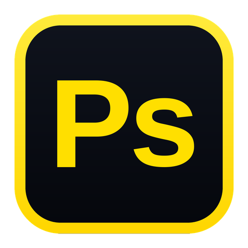

Farida studio-11.jpg

PixelShop
Splits the active portrait into two mathematically exact non-destructive layers:
• Low Frequency (Color & Tone) — Gaussian blurred skin transition layer.
• High Frequency (Texture & Pores) — Neutral 128 gray detail layer set to Linear Light blend mode.